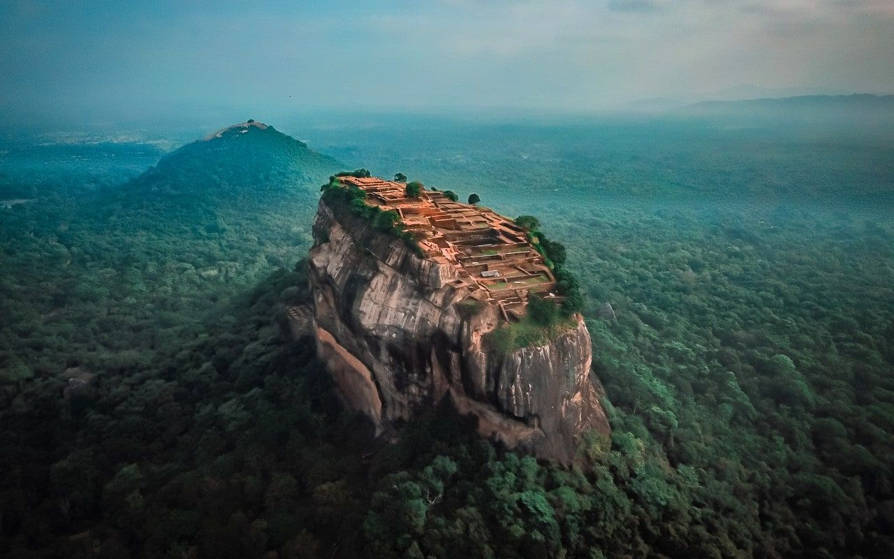
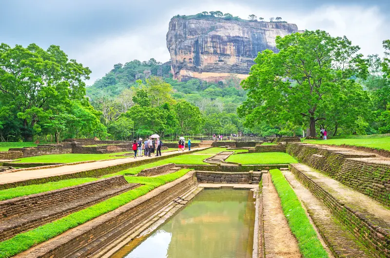
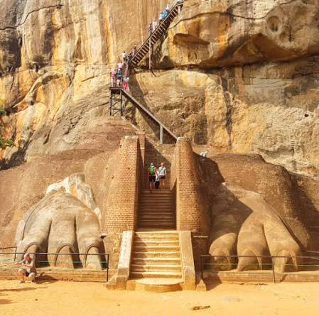
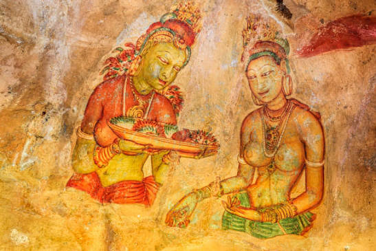
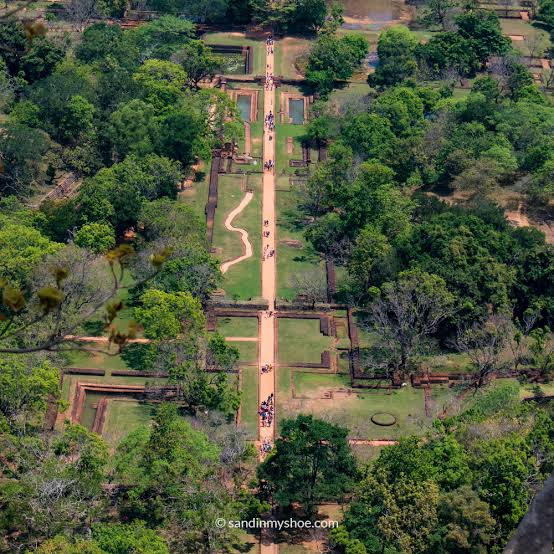

Discover one of Sri Lanka's most remarkable archaeological wonders — an ancient fortress rising dramatically above the surrounding landscape.
Sigiriya is an ancient rock fortress and archaeological site located in central Sri Lanka. Its dramatic rock, sophisticated gardens and remarkable artwork make it an important part of the island's cultural heritage.
Rising approximately 180 metres above the surrounding plains, Sigiriya dominates the landscape of the surrounding area.
The site is particularly famous for its ancient gardens, water-management systems, frescoes, mirror wall and the enormous lion-paw structures at the entrance.
Today, Sigiriya represents an extraordinary combination of architecture, engineering, art and natural landscape.
Metres of Rock
Years of History
Major Garden Areas
From ancient engineering to extraordinary artwork, Sigiriya contains many features that demonstrate the creativity of its builders.
The famous entrance to the upper rock is associated with a monumental lion structure. Today, the enormous stone paws remain beside the staircase.
Sigiriya is renowned for its surviving paintings, which provide an important example of ancient Sri Lankan artistic traditions.
The gardens include ponds, channels and carefully planned water features that demonstrate sophisticated landscape design.
A polished wall beside the ancient pathway contains historic inscriptions and graffiti left by visitors over many centuries.
The elevated rock provided a naturally dramatic setting for a fortified royal complex and architectural structures.
Sigiriya is recognised internationally for its archaeological, architectural and cultural importance.
A simplified journey through some of the important periods associated with the history of Sigiriya.
Sigiriya became associated with King Kashyapa I, who established a royal centre at the site.
The site later became associated with Buddhist monastic activity.
Sigiriya attracted increasing attention from archaeologists and researchers.
Sigiriya was inscribed as a UNESCO World Heritage Site because of its cultural significance.
A glimpse into the landscapes, architecture and heritage surrounding the Lion Rock.

The iconic rock fortress




Click the button below to discover an interesting fact about Sigiriya.
Sigiriya is located in the Cultural Triangle of Sri Lanka, surrounded by the landscapes of the country's central region.
Sigiriya is situated in the Matale District of the Central Province of Sri Lanka.
It is located near Dambulla and forms part of Sri Lanka's famous Cultural Triangle.
Matale District